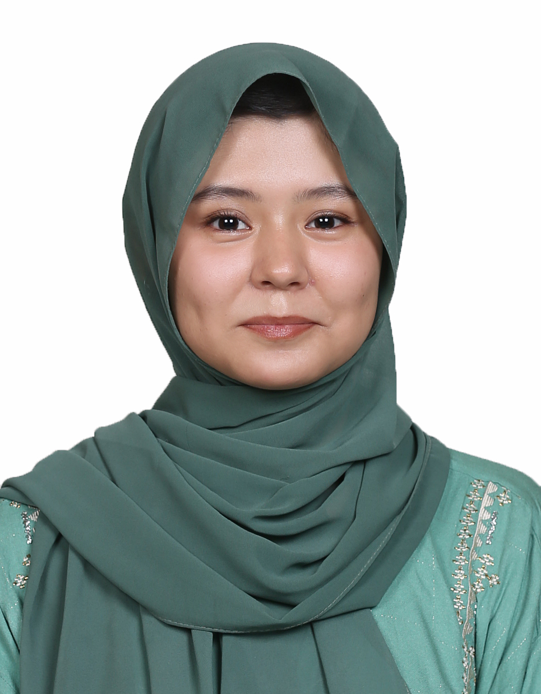

SANA BATOOL

EDUCATION
Islamia Girls College, Quetta, Pakistan
Higher Secondary School Certificate (HSSC), Computer Science
Meritorious Public High School, Quetta, Pakistan
Secondary School Certificate (SSC), Science Group
- Awarded High Scorer in Secondary School Examination at School
WORK EXPERIENCE
English Language Instructor – Sir Syed English Language Academy
- Taught English language foundational grammar to 9 students of Elementary Level
- Evaluated students’ language proficiency progress through daily homework, and weekly tests
POSITIONS OF RESPONSILBILITY
Project Lead – AFS Global Accelerators Intercultural Exchange Program, USA
- 8 weeks long training on Global Citizenship for Social Impact
- Identified a local mental health problem that often lead to Heart Attack, and related it to SDG-3.4 “Reduce Mortality
from Non-Communicable Diseases and Promote Mental Health”
- Proposed a sustainable solution by developing a ring that can regulate human blood pressure, & mental strain
Executive Member – Life Coach Association, Meritorious High School, Quetta
- Organized personal growth, emotional intelligence, and motivational workshops for secondary high school students
- Hosted Spelling Bee Competition, Story Review Competition, Quiz Competition, Result Distribution Ceremony
Project Lead – Lincoln Corners Summer Camp, Quetta
- Published a personal blog “Learning is a Personal Responsibility” https://quettatapestry.wordpress.com/2023/07/08/responsibility
-in-learning-is-learning-a-personal-responsibility-or-not/ in “Blog Writing, Publishing, & Communication Skills” workshop
- Led team of 4 individuals for group presentation that aimed at assessing performance of Lincoln Corners Summer Camp
Head – School’s Student Council
- Maintained the regulations within the students in school
Volunteer Member - Management Team & Outreach Team
- Event Promotion: Invited individuals and organization to career counseling event and promoted the Hazara Students Network
- Information Dissemination: Educated people about the events and the organization's mission.
- Leadership & Teamwork: Collaborated with the management team to ensure successful event execution.
- Developed leadership and communication skills through event promotion and team collaboration.
Delegate - Balochistan Model United Nations
Pakistan National Assembly Committee
- Agenda: Regulating Religious Influence in State Policy: Balancing Faith and Constitutional Governance
In Pakistan
- Advocated for constitutional governance in religious policy-making
- Proposed policies and motions that contributed to the passing of a bill
- Successfully defended and negotiated the acceptance of two key clauses
AWARDS AND ACHIEVEMENTS
- Presentation Competitor – Life Coaching Association, Meritorious Public High School, Quetta
- Speaker – Eid e Ghadeer Event, Ali Ibn e Abi Talib Islamic Institution, Quetta
- Participant – Picture Description Event, Life Coach Association, Meritorious Public High School, Quetta
- Winner – the Honorable Mention as delegate of Khalid Maqbool Siddiqui at BMUN
CERTIFICATIONS
- ESL Diploma Course “English as a Second Language” – Pentagon Academy, Quetta, Pakistan
- Computer Science Certifications – MS Office 2019, Adobe Photoshop
SKILS & INTERESTS
- Graphic Designing, Leadership, Event Management, Debating, Public Speaking
- Volleyball Play, Evening Walks, Reading Fiction & Non-Fiction, Intellectual and Analytical Conversations, Volunteerism
OTHER